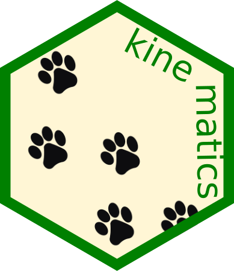
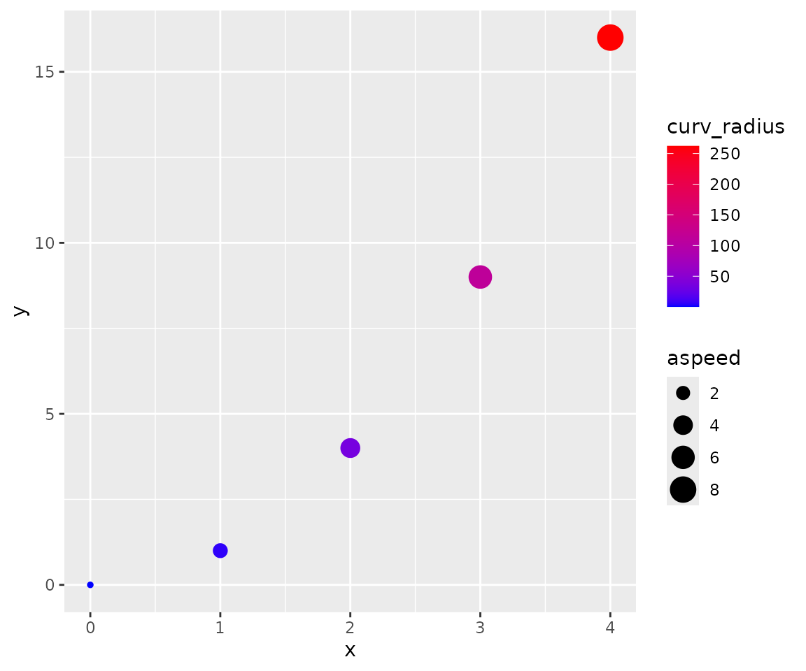
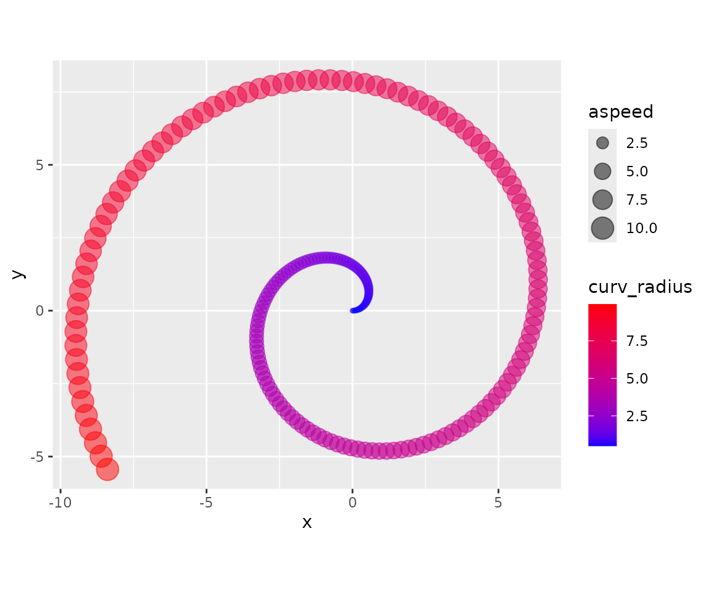
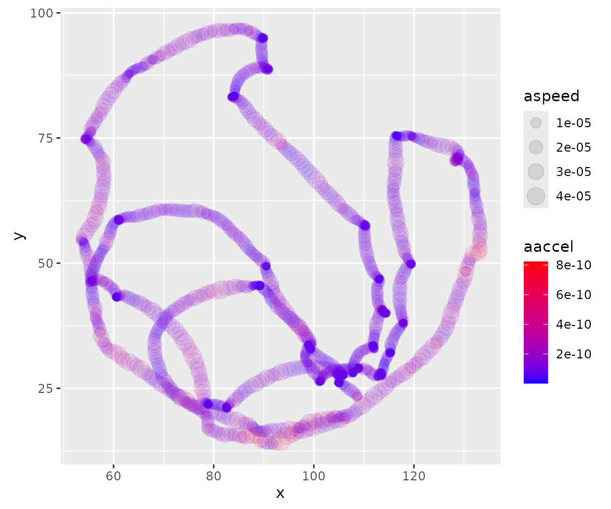
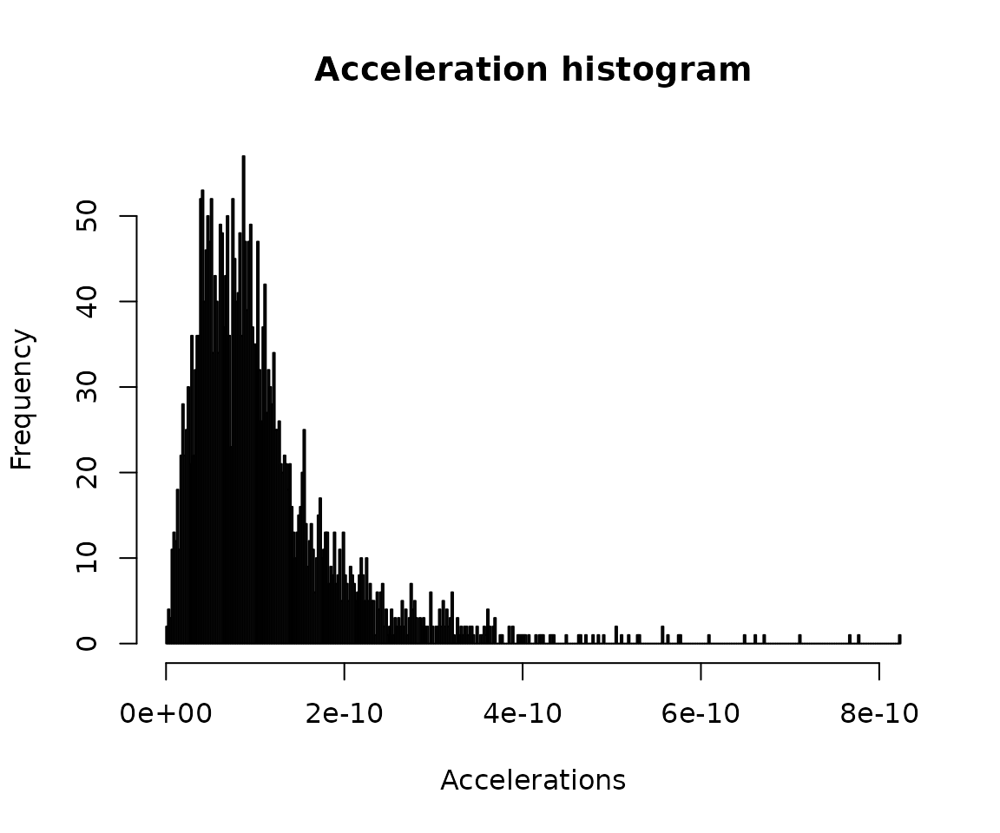

Basic usage
example.RmdMotivation and purpose
This package was born as a collaboration between a physicist and an experimental biologist. Everything started when our department bought a fancy device for tracking the positions of a small organism on a Petri dish.
Long story short, the device captured several images per second, and managed to identify the horizontal and vertical positions of the organism under study. The output produced by the software contained time series with values of the sampling times , and the corresponding two-dimensional positions . Unfortunately, this output also contained some obscure and difficult to manage processed data.
We decided to write our own analysis software for these sampled trajectories, using only the fundamental information about movement (that is: , and , see more on section below). This type of data, although inspired by the particular problem of the organism’s tracker, is completely general and applicable to any object moving in two dimensions.
Our package returns different properties of that movement, such as the instantaneous speeds, accelerations and curvatures.
Installation
This is an R package. R is required, RStudio is recommended.
In order to use the package, we have to install it. The package is in CRAN, so we can install it easily by typing:
install.packages("kinematics")After installing, we have to attach the package as usual:
And we are ready to go!
Basic usage
Movement and how to store it
This is a package for studying movement. So we need a way of coding movement into an object. This is R, so you guessed it! We’ll code movement in the form of a data frame.
If you ask a kid to describe what movement is, probably he will trace a curve in the air with the tips of his fingers. And he will be right, that’s movement indeed! The apparently simple idea of “tracing a curve with the tips of your fingers” can be abstracted to the idea of a position that changes on time. One possible way of representing this is by a list of times and their corresponding positions.
Particularly, our data frames representing movement will have three columns:
- The column: representing time
- The column: representing the horizontal position at the time
- The column: representing the vertical position at the time
A minimal example could be:
mov <- data.frame(t = c(0, 1, 2, 3, 4),
x = c(0, 1, 2, 3, 4),
y = c(0, 1, 4, 9, 16))that represents five steps of what seems to be a parabolic movement:
plot(mov$x, mov$y, xlab = "x", ylab = "y")Notice that the insides of the data frame look like below:
#> t x y
#> 1 0 0 0
#> 2 1 1 1
#> 3 2 2 4
#> 4 3 3 9
#> 5 4 4 16where each row represents one “footprint”, that is, one snapshot of the movement. For instance, we see that at , the position of the organism was .
Extracting movement properties
Movement has much more properties than just position. Some examples are speed, acceleration, curvature and displacement. The branch of physics that deals with this kind of problems is known as kinematics. In this package, we implemented some of the classical algorithms of kinematics. We did it in what we think is a practical and easy-to-use fashion.
The function append_dynamics is a way of
extracting as much movement properties as possible. If we apply
it to mov, the resulting data frame contains much more
columns:
mov_analyzed <- append_dynamics(mov)#> t x y vx vy aspeed ax ay aaccel curv curv_radius disp_x
#> 1 0 0 0 1 0 1.000000 -3.420544e-12 2 2 2.000000000 0.50000 NA
#> 2 1 1 1 1 2 2.236068 -6.539938e-14 2 2 0.178885438 5.59017 1
#> 3 2 2 4 1 4 4.123106 3.250388e-14 2 2 0.028533603 35.04640 1
#> 4 3 3 9 1 6 6.082763 2.179979e-14 2 2 0.008886432 112.53111 1
#> 5 4 4 16 1 8 8.062258 -1.726720e-12 2 2 0.003816453 262.02338 1
#> disp_y adisp
#> 1 NA NA
#> 2 1 1.414214
#> 3 3 3.162278
#> 4 5 5.099020
#> 5 7 7.071068These new columns are:
-
vx,vyandaspeed: horizontal, vertical and absolute speed. -
ax,ay, andaaccel: horizontal, vertical and absolute acceleration. -
curvandcurv_radius: curvature and curvature radius. -
disp_x,disp_yandadisp: horizontal, vertical and absolute displacement (since previous time step).
A note about units
The units of and are expected to be the same (say, meters). All the new columns derive their units from thse of and that is:
- Speeds’ units are: unit divided by unit.
- Acceleration’s units are: unit divided by unit squared.
- Curvature unit is divided by unit.
- Curvature radius’ unit is the same as .
- Displacements’ units are the same as .
The new columns are ready to be analyzed. For example, we can
visualize curvature and absolute speed using ggplot2:
library(ggplot2)
ggplot(data = mov_analyzed,
mapping = aes(x = x, y = y, col = curv_radius, size = aspeed)) +
geom_point() +
scale_color_gradient(low="blue", high="red")
More realistic examples
Parametric equation of movement
A common way of describing movement in physics is by assigning a function of time to and . For instance, an Archimedean spiral is known to follow the equations below:
$$ x(t) = t \cdot \cos(t) \\ y(t) = t \cdot \sin(t) $$
We can encode it, and sample at intervals of 0.05 units of time, using the snippet below:
# Generate the times
ts <- seq(0, 10, by = 0.05)
# Calculate the positions using a function
xs <- ts * cos(ts)
ys <- ts * sin(ts)
# Store as data frame
mov <- data.frame(t = ts,
x = xs,
y = ys)The data looks like this:
plot(mov$x, mov$y, xlab = "x", ylab = "y", asp = 1)And repeating the analysis shown in the previous example, we can significantly enrich the features we can see on the data. For instance, once again, we use color to plot curvature radii and size to plot absolute speed.
mov_analyzed <- append_dynamics(mov)
ggplot(data = mov_analyzed,
mapping = aes(x = x, y = y, col = curv_radius, size = aspeed)) +
geom_point(alpha = 0.5) +
coord_fixed() +
scale_color_gradient(low="blue", high="red")
Sampled curve
Much more interesting examples will come from actual sampled data, such as the ones that our device produced. In that case, we’ll have to load the data from whatever external source we used, and transform it to the (t, x, y) data frame format. Sometimes, we’ll also need to clean the data a bit (for instance, removing NAs, artifacts, … you know the drill).
For pedagogical purposes, we include an example data set in this package. The curve was traced by a macroinvertebrate called Asella inside a Petri dish (no animals were harmed in the making of this package).
This is how it looks after importing and cleaning:
mov <- kinematics::example_mov
plot(mov$x, mov$y, xlab = "x", ylab = "y", asp = 1)Using append_dynamics we can extract a lot of
significant information: And this is an example of how our analysis
enriches the information contained on it:
mov_analyzed <- append_dynamics(mov)And use the power of R to, for instance, make nice plots. Such as this one that maps acceleration to color and speed to marker size.
ggplot(data = mov_analyzed,
mapping = aes(x = x, y = y, col = aaccel, size = aspeed)) +
geom_point(alpha = 0.1) +
coord_fixed() +
scale_color_gradient(low="blue", high="red")
Or a histogram about accelerations:
hist(mov_analyzed$aaccel,
breaks = 500,
xlab = 'Accelerations',
main = 'Acceleration histogram')